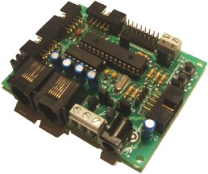
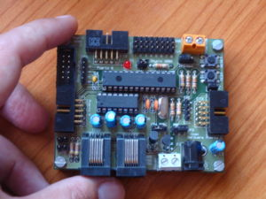
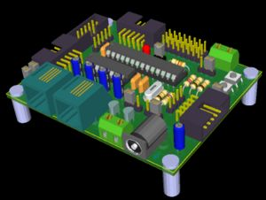
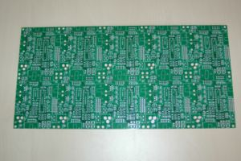

Contenido
[ocultar]Introducción

La Skypic es una tarjeta hardware libre, para el desarrollo de aplicaciones hardware y software basadas en el microcontrolador PIC16F876A de Microchip. No sólo sirve para el desarrollo de prototipos, sino que también está pensada para funcionar en sistemas terminados. Se trata de una tarjeta muy versátil que se puede emplear como:
- Tarjeta entrenadora: Se conecta al PC a través del puerto serie y se descargan programas de manera rápida y sencilla. Perfecto para aprender a programar microcontroladores
- Tarjeta autónoma de control: Puede funcionar en modo autónomo, sin conectarse al PC. Cada vez que se encienda la tarjeta se ejecutará el programa que está grabado en la memoria flash y que ha sido previamente descargado. No es necesario ningún tipo de grabador externo.
- Periférico Inteligente del PC: También es posible utilizar la skypic para conectar el PC con el mundo exterior. Actuaría como un periférico conectado al puerto serie del PC, que puede recibir órdenes y actuar en consecuencia.
Skypic y Robótica
La Skypic es especialmente útil para la robótica, y es la aplicación para la que fue diseñada. Algunos de los robots que utilizan esta tarjeta son:
| Skybot. Robot de iniciaición a la robótica, que se desplaza mediante dos ruedas motrices y está dotado de sensores para reaccionar ante estímulos del medio. Está pensado para aquellos que quieren iniciarse en el mundo de la robótica y los microcontroladores. | |
| Cube Revolutions. Robot modular con topología de una dimensión que imita el movimiento de los gusano. Es un robot de investigación. |


Índice General
| Hardware Documentación del hardware |
Planos Esquemático, PCB y ficheros de fabricación | ||
| Software/Linux Software para GNU/Linux |
Software/Windows Software para Windows | ||
| Ejemplos Programas de ejemplo |
Periféricos Periféricos para la Skypic |


Fotos
| 
La skypic 2009 |

Modelo 3D de la skypic 2009, hecho con Kicad |


Programación de la Skypic
| Curso de programación del PIC16 en C |
Bootloader
La placa SKYPIC viene por defecto con un Bootloader grabado que permite descargar los programas desde un PC con puerto serie o USB (usando un conversor usb-serie)
En caso de desprogramación del Bootloader tenéis que grabar este software
PIC16_bootloader.hex en el PIC usando:
- Programador de pics USBPICPROG (Multiplataforma)
- El Pyburn y otra Skypic como grabadora (Multiplataforma)
- El MPLAB con el ICD2 de Microchip (Windows)
Lista de correo
Lista de correo para el intercambio de información, discusión, etc, sobre la Skypic, Skycontrol, robot skybot y en general robótica y electrónica:
- Dirección: skylista@googlegroups.com
- Página web: http://groups.google.com/group/skylista
Repositorio
- Repositorio SVN: http://svn.iearobotics.com/Skypic
Para obtener la última versión (v1.3-2009) teclear:
svn co http://svn.iearobotics.com/Skypic/v1.3-2009/
Enlaces
- Hoja de datos del PIC16F876A, de Microchip
Autores
Licencia

|
Open Source Hardware Definition v1.0 |
¿Dónde comprar la Skypic?
La tarjeta Skypic es hardware libre, por lo que cualquiera la puede fabricar, distribuir, modificar o vender. Algunas de las empresas que comercializan la Skypic son:
Historia
- 28/Mayo/2010: Tirada segunda: Fabricados 100 PCBs de la Skypic en China! (http://pcbcart.com/)
| 
Segunda tirada: paneles fabricados en China |

- 29/Nov/2009: Agotados los PCBs. Los nombres de las personas e instituciones que han colaborado se han puesto en el apartado de créditos (Blog)
- 3/Nov/2009: Sacada a la venta una edición limitada de 20 PCBs de la Skypic 2009 para ayudarnos en la financiación del hardware libre (Blog)
- 02/Nov/2009: Versión industrial de la Skypic 2009 validada. Noticias en blog: (1) (2) (3). Las características nuevas son:
- Migración de la Skypic del Eagle al Kicad. La Skypic-2009 ha sido diseñada usando sólo herramientas libres por lo que no tiene ninguna restricción para su compartición. Es una placa Hardware libre al cuadrado: es hardware libre hecho con herramientas libres.
- Añadido conector de 5 pines recto para programación ICSP
- El conector de programación CT4 se ha sustituido por uno recto, en vez de acodado para diferenciarlo de los puerto A, B y C
- La clema triple ha sido sustituida por una doble
- Se usan los transistores BC547, en vez de los SC107
- Añadidos plano de masa y VCC
- Historia anterior (por hacer)
Créditos
Muchísimas gracias a las siguientes personas, empresas e instituciones por su ayuda en la financiación de la Skypic 2009. ¡Gracias por apoyar el hardware libre!
- Artifact Consulting (7 PCBs). Ingenieros y Expertos en el campos de la Informática y las nuevas tecnologías. Pozuelo, Madrid. Director técnico: Raul Lapeira Herrero
- Isidoro Gayo Vélez (2 PCBs). Pola de Gordón, León.
- Juan Manuel Domínguez García-Cuevas. (2 PCBs). Marbella, Málaga.
- CEIEC. (1 PCBs).Centro de Innovación Experimental del Conocimiento. Universidad Francisco de Vitoria
- Quoriam Ingenieros SL (1 PCB). Consultoría y desarrollo de sistemas y aplicaciones informáticas a medida. Madrid.
- Francesc Constans Cots (1 PCB). Secretario de la junta directiva de A.R.D.E. Barcelona.
- Vicente Torres Torres (1 PCB). Socio fundador de A.R.D.E. Sant Jordi de ses salines, Ibiza.
- Ander Welton (1 PCB). Ingeniero en informática de Sistemas. Castellbisbal, Barcelona
- Alfredo García Villarejo (1 PCB). León.
- Patrick Tamellini (1 PCB). Torremolinos, Málaga
- Andrés Alvarez Skinner (1 PCB). Techsweb S.L. Madrid
- Raul Frías Ríos (1 PCB). Parla. Madrid.
Agradecimientos
- A Quark Robotics por su ayuda en la fabricación de la Skpic 2009
- A todo el equipo de Ifara Tecnologías, por financiar la primera tirada de la Skypic
- A Gedeón Domínguez por el plano para grabar una Skypic desde el puerto paralelo.
Noticias
- 30/Ene/2012: Añadidos enlaces a RobotPremiere: Venden la Skypic
- 09/Mayo/2011: Añadido logo y licencia de OSHW (Open Source Hardware)
- 05/Dic/2009 : v1.3 rev.116: Modificados los paths para ver correctamente la Skypic con Kicad 2010-05-05 BZR 2356
- 10/Jun/2010: Añadido fichero de fabricación con un panel de 10 Skypics (Fabricación en China)
- 29/Nov/2009: Añadidos los nombres de las personas e instituciones que han colaborado en la financiación de la skypic 2009
- 2/Nov/2009: Liberada la Skypic 2009 (V1.3)
- 11/Mayo/2007: Migrada la página de la Skypic al wiki. (Enlace a la antigua página)